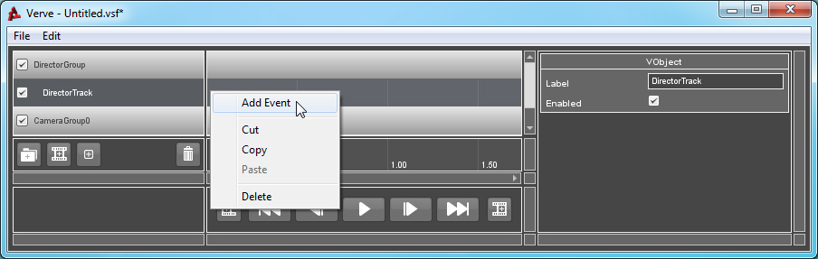
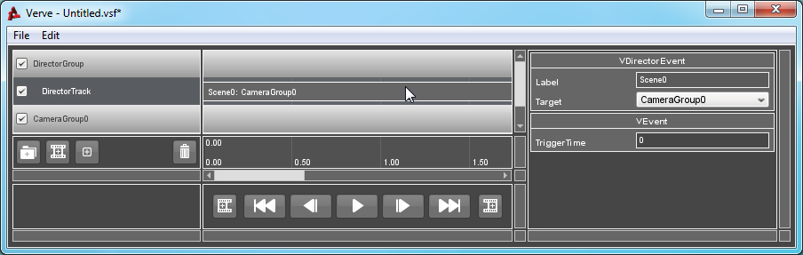

Tutorial : Director
Objects: VDirectorGroup, VDirectorTrack, VDirectorEvent
This group is unique - you can only have one Director Group in your sequence.
The Director Group, coupled with a Director Track, gives you power over scene definition and camera views in your sequence. This is particularly useful for Cinematic or Cutscene sequences! You wouldn't need to use a Director if you were, say moving an elevator or opening a door. In this case, you will remain in control of your Player, Vehicle or Camera.
The Director Track also allows you to define Scenes in your sequence, which can be jumped to using Scene Jump Events.
How to Use:
In this Sequence, I have a Director Group and Track as well as a valid Camera Group. If you are unsure of how to create or validate a Group, click here.
Right-Click on the Track and select "Add Event".

Select the newly created Event. From the Property List window, you are able to identify which Camera you would like to Cut to when the event is triggered.
Here you can also define the name of the Scene by applying a Label to the Event. If you wanted to define a Scene without changing the camera, you would need to create a new Event and reference the same Camera Group in the last Event.
